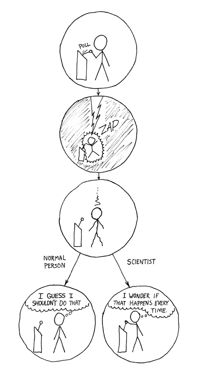

Construindo uma solução robusta e escalável em ciência de dados
Contents

Construindo uma solução robusta e escalável em ciência de dados#
Nota
Para todos que querem contribuir com o projeto, por favor, sigam as orientações do guia de contribuição.
Conforme uma solução de ciência de dados cresce em termos de requisitos de negócio, confiabilidade, manutenibilidade e escalabilidade, a complexidade destes projetos tendem a aumentar significativamente.

Fonte: xkcd
Este é o seu sistema de Machine Learning?
Sim! Você joga os dados nesse monte de álgebra linear e coleta as respostas do outro lado.
Mas e se as respostas estiverem erradas?
Ah, é só mexer nesse monte até que elas pareçam corretas.
Desta forma, ter um fluxo de ciência de dados reprodutível garante consistência nos resultados, facilitando a apuração de erros e manutenções destes projetos.
Este livro introduz ferramentas da linguagem Python para desenvolver fluxos de trabalho reprodutíveis e de fácil manutenção para um projeto de ciência de dados. Serão introduzidas melhores práticas e ferramentas que habilitam os cientistas de dados a se a adaptarem ao crescimento da complexidade já mencionada, enquanto garantem a confiabilidade da solução.
Ao final deste livro você aprenderá como estruturar seu projeto, usar parametrização e logging de forma efetiva, e construir pipelines para testar, depurar e construir resultados reprodutíveis a partir do fluxo de trabalho.
O que é reprodutibilidade?#
Um projeto de ciência de dados é reprodutível com um alto nível de confiabilidade quando, ao ser replicado em outra máquina, traz exatamente os mesmos resultados.

Fonte: xkcd
Pessoa normal: Acho que não deveria ter feito isso...
Cientista: Será que acontece sempre?
O que é manutenibilidade?#
A manutenibilidade de um projeto de ciência de dados é vista quando outros profissionais conseguem depurar, manter e adicionar características ao projeto com facilidade sem inserir novas falhas no código.

Fonte: xkcd
Eu fiz um código pra automatizar aquela tarefa.
Ah, legal! ... espere, você escreveu isso? Ah não.
Quer ver o código?
Eu gostaria, caso você não tivesse dito isso em tom de "quer ver um cadáver?"
Meu código é similar a um cadáver, no qual você pode ver agora ou esperar algumas semanas até que ele se torne um problema.
Você é sortudo que as pessoas ao seu redor sabem que criam mais problemas do que resolvem.
Sobre a autora original do livro#
Khuyen Tran escreveu mais de 150 artigos sobre ciência de dados com mais de cem mil visualizações por mês na plataforma Towards Data Science. Ela também escreveu mais de 500 artigos de forma diária no site Data Science Simplified. A sua missão atual é fazer com que os projetos open-source (de código aberto) sejam mais acessíveis à comunidade de ciência de dados.
Sobre o autor da tradução para português#
Henrique Branco é um instrutor de linguagem Python e disseminador de boas práticas, com atuação como Engenheiro de Machine Learning, com objetivo de ampliar a qualidade das soluções de ciência de dados entregue por onde ele passa, através do ensino de boas práticas de arquitetura de software, treinamentos, e outras formas de compartilhamento de conhecimento perante a alta demanda por soluções de maior qualidade, de forma geral.